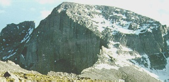

The North Face route of Longs Peak is perfect for beginner hiker-climbers who want to reach the summit by a different route from the main trail. It is direct, shorter, and less crowded than the Keyhole route.
The views are spectacular and provide some of the finest scenery in the park.
Difficulty Level: Beginner
Time: One day
Physical Stress: Mild to moderate